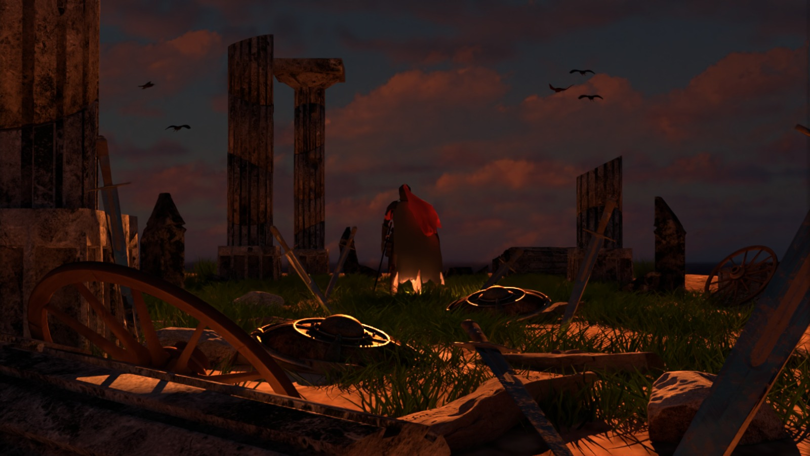

Shading normals uses an additional texture to define surface normals, allowing for detailed shading effects without increasing mesh complexity.
In our scene, the shading normals are responsible for enhancing the quality of the meshes of the sword, the stone columns and the stones at the floor.
However, we noticed these normal textures avoid the shields from reflecting light and therefore we decided to remove the normals of these meshes.
Source code:
Simple test:
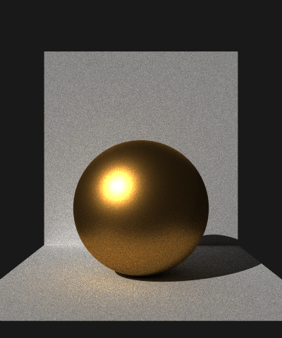
Texture:
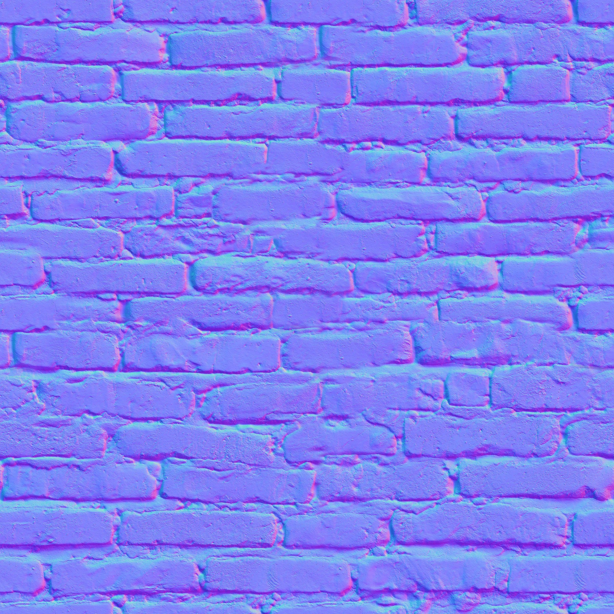
References:
Our implementation was based on LearnOpenGL.
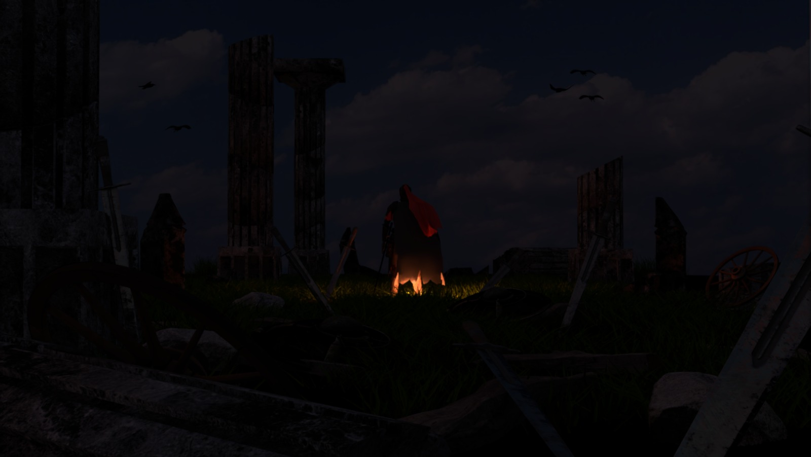
Alpha masking uses a texture to determine transparency, allowing rays to pass through based on alpha values without increasing mesh complexity.
In our scene, alpha masking is responsible for letting the light through the clouds and also to enhance the quality of the meshes of the swords,
with these feature we managed to make dents to the swords without modifying its meshes.
Source code:
Simple test:
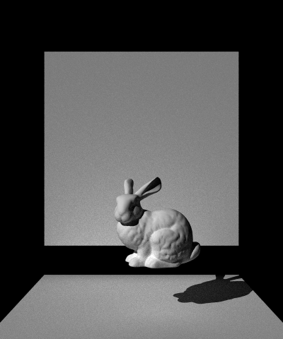
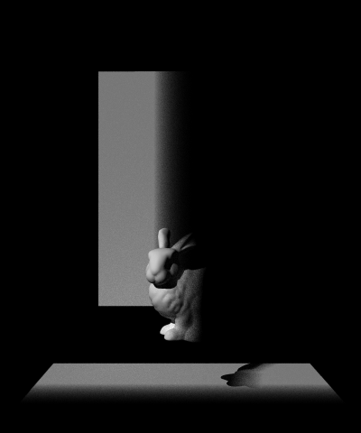
Alpha mask:
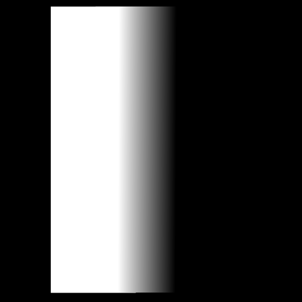
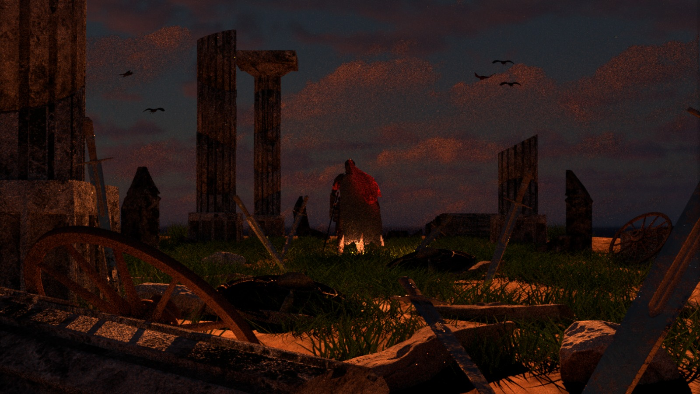
Halton sampling improves rendering quality by generating well-distributed sample points ensuring better coverage of the sample space compared to pseudo-random sampling.
In our scene, we can see how halton sampling reduces the noise specially at smooth zones such as the clouds with the same amount of samples (32). This helps us get a higher quality with less computational cost.
Source code:
Distribution of Halton and Pseudo-random samples:
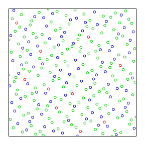
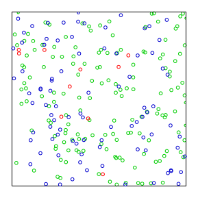
Images from Wikipedia.
Simple test:
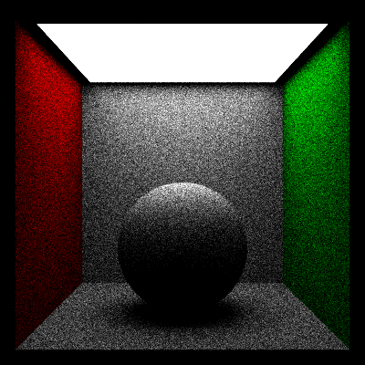
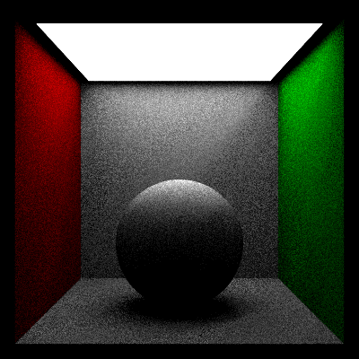
References:
Our implementation was inspired by Physically Based Rendering book (Chapter 8.6).
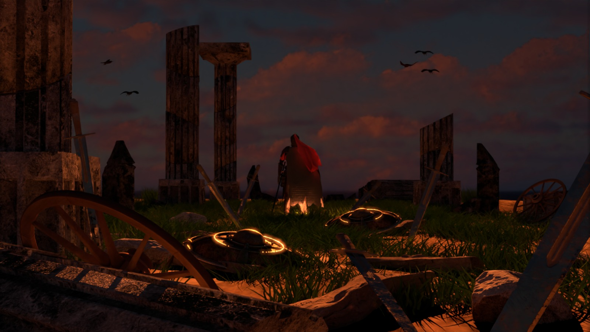
Postprocessing allows us to simulate lens effects such as bloom or glare after rendering. It consist of selecting brightest areas and applying operations such as Gaussian blurring to these selected pixels.
In our scene, bloom is used to highlight the reflection of the shield.
Source code:
Simple test:
Bloom:
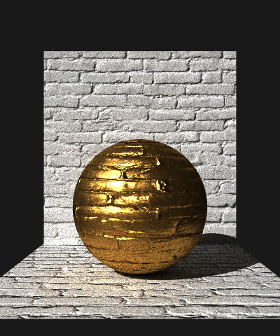

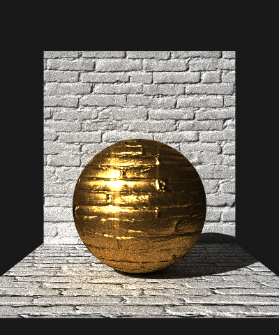
Bloom and glare:
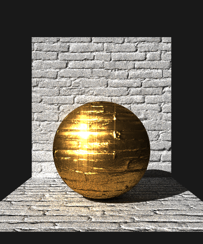
References:
Our implementation was inspired by How to use Bloom and Glare? - C4D.
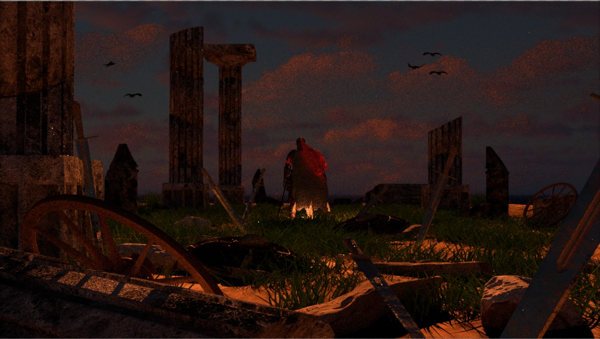
Image denoising improves rendered images by integrating a Intel® Open Image Denoise library into the pipeline. It uses additional data such as normals and albedo to preserve details and avoid excessive blurring.
Source code:
Simple test:
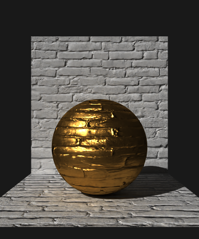
References:
We use Intel® Open Image Denoise library to denoise our images.
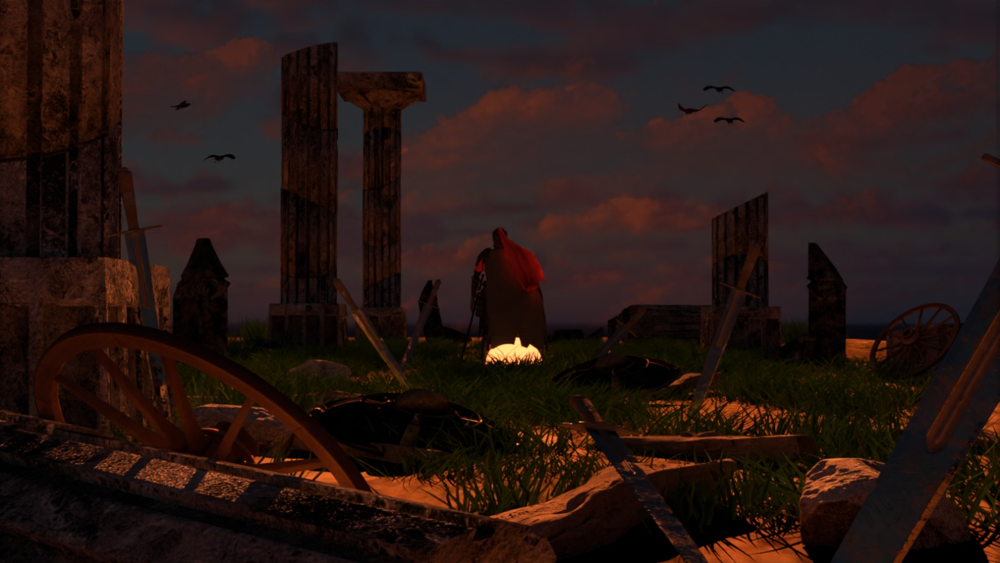
Area lights improve rendering quality by reducing noise through direct sampling of emissive surfaces.
Instead of relying on chance hits, they sample light sources proportional to their area when a surface is hit.
This ensures more consistent lighting contributions and lowers variance.
In our scene, area lights are used to create a light below the knight, giving it a mystical glow and emphasizing the knight's presence.
Source code:
Simple test:
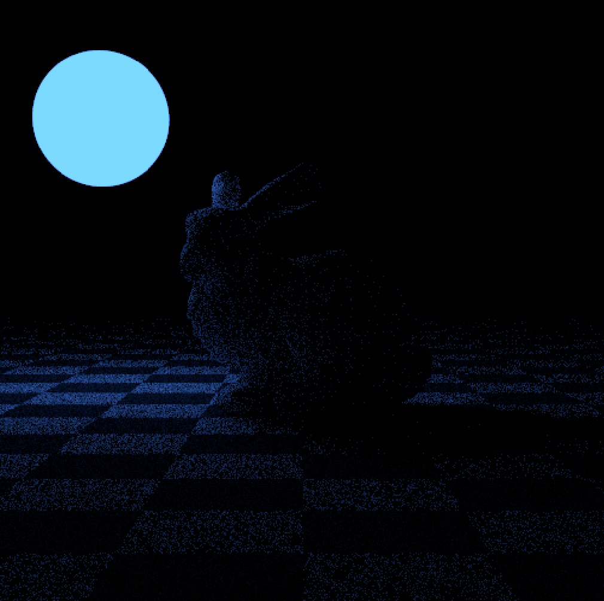
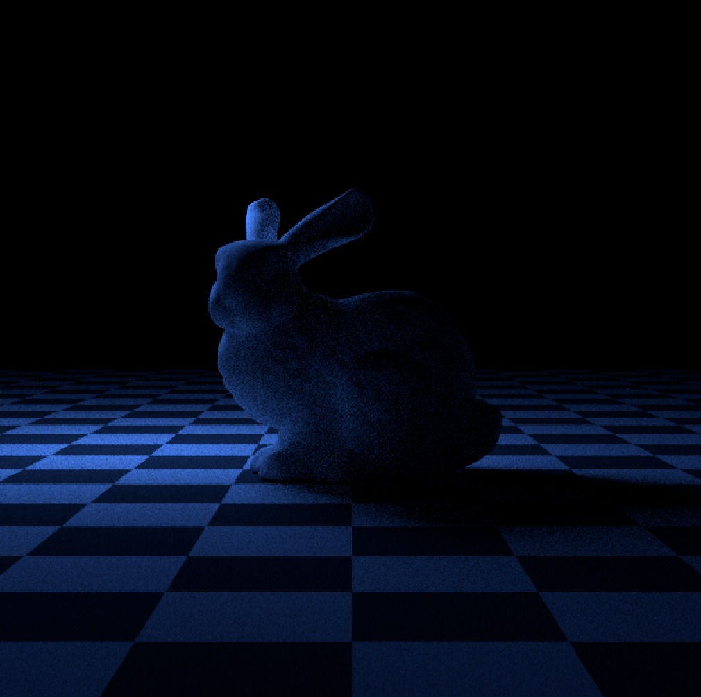
References:
Our implementation was inspired by Physically Based Rendering book (Chapter 12.5).
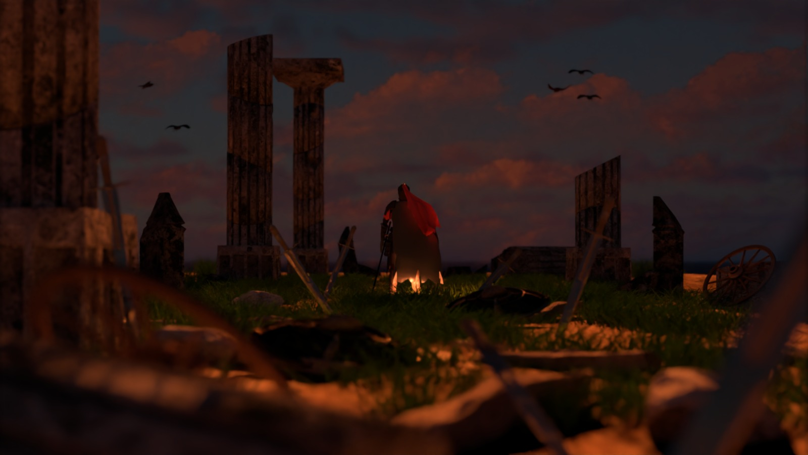
A thinlens camera simulates real-world optics by enabling depth of field effects. This allows us to control the scene focus by varying aperture values.
In our scene, thinlens helps us control the focus of the camera towards the knight, which is the main character of the scenario.
Source code:
Simple test:
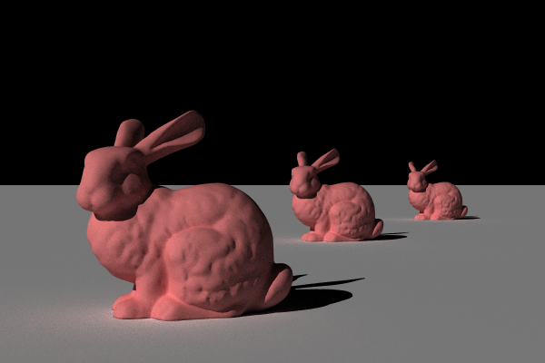
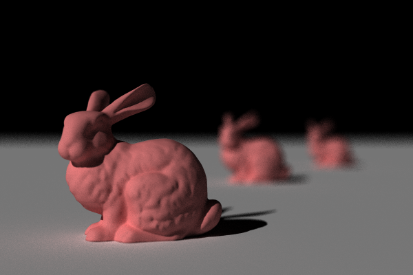
References:
Our implementation was inspired by Physically Based Rendering book (Chapter 6.2).
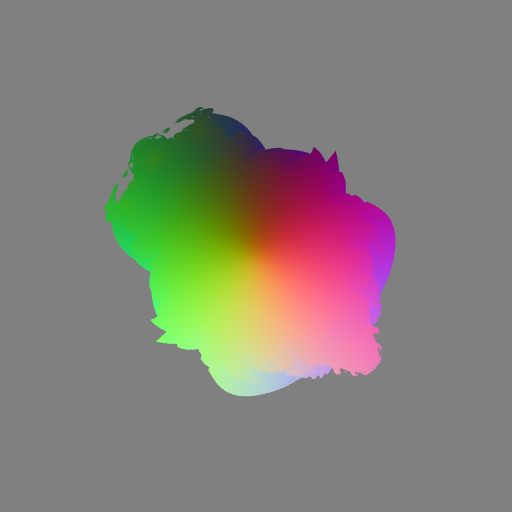
Signed Distance Fields (SDFs) represent shapes by calculating the distance to the nearest surface, enabling efficient rendering of complex geometries through ray marching. In this example, we build a Mandelbulb shape with n = 8.
Source code:
Simple test:
Another example:
References:
Our implementation was inspired by Iquilezles and Syntopia.
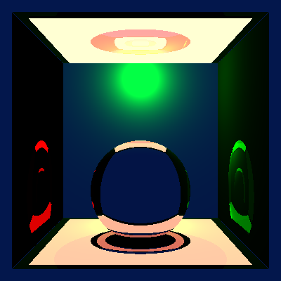
Arriving to a consistent scene was not easy. Below we show some bugs that broke our renderer making it generate interesting results.